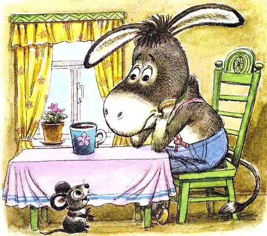

Короткие сказки, Сказки для детей 3-6 лет
Оглавление
Зачем ребенку читать сказки - есть ли от них польза?
Сказки существуют в нашей жизни еще с давних времен – их рассказывали подрастающему поколению, обучая, таким образом, и формируя представление об окружающем мире. Сегодня чтение ребенку сказок является одним из вариантов совместного досуга, который несет в себе огромную пользу для развития малыша.
Дети воспринимают чтение сказок, как один из видов развлечения, и если малыш просит вас почитать ему сказку – не отказывайте ему в этом. Сказки ненавязчиво и с интересом рассказывают о том, что хорошо, а что плохо, что такое дружба и благородство, учат общению и человеческим взаимоотношениям и многому другому. Русские народные сказки – это первый «учебник» для малышей, открывающий мир и рассказывающий о его многогранности.
Самые первые понятия о добре и зле, ребенок, как правило, получает именно из сказок, где доступно представлено, почему добро лучше зла и как оно его побеждает, что только благодаря усердию и старанию можно чего-то добиться в жизни. Благодаря сказкам, у ребенка расширяется словарный запас, развивается фантазия, речь, внимание, мышление и прививается любовь к книгам. Еще, это своего рода эмоциональная встряска – дети получают удовольствие от общения с родителями, они слушают интересные истории, рассматривают красивые картинки, учатся выражать свои эмоции по отношению к героям и с нетерпением ждут, как и чем закончится рассказ. Через сказки ребенок испытывает радость и грусть, сочувствие к герою, восторг, интерес, неприязнь, разбирается, что такое обман, кто жадный, а кто щедрый, кто умный, а кто глупый – через сказку ребенок не просто знакомится с миром, он как бы пробует его на вкус, открывает для себя новые чувства и эмоции.
Когда начинать читать сказки?
Ребенок все прекрасно слышит и чувствует, находясь в утробе матери, поэтому сказки можно начать читать еще до рождения малыша, а после появления на свет, продолжать эту чудесную традицию. Сначала крохе будет просто приятно слушать мамин голос, а со временем развиваясь, он начнет проявлять все больший интерес к книгам и изображениям в них.
Каждому возрасту своя книга
Деткам до года лучше всего петь колыбельные и читать небольшие стишки и потешки, связывая это с действиями и предметами, чтобы помочь малышу познакомиться с названиями окружающих его вещей. Чуть позже, после года, можно попробовать познакомить малыша с коротенькими сказками, такими как «Курочка Ряба», «Репка», «Колобок», «Волк и семеро козлят», постепенно расширяя библиотеку и предлагая для чтения новые рассказы. К трем годам хорошо воспринимаются такие сказки как «Маша и Медведь», «Красная шапочка», «Гуси-Лебеди», «Соломенный бычок». А к 5 годам ребенку понравятся сказки с различными волшебными персонажами и иными необычными сказочными героями, например «Русалочка», «Золушка», «Принцесса на горошине», «Щелкунчик» и другие.
Читайте ребенку каждый день, обсуждайте сюжет, рисуйте героев, лепите, пересказывайте, ставьте спектакль по прочитанной сказке и интересуйтесь, что понравилось, а что нет, какую книгу почитаем в следующий раз, заинтересовывайте, предлагайте придумать свою сказку или изменить сюжет, концовку недавно прочитанной. Наслаждайтесь общением с ребенком и вскоре вы увидите результат своих трудов.
Капризная кошка
Сказка Сутеева В.Г.
Девочка сидела за столом и рисовала картинки. Вдруг пришла полосатая Кошка и стала смотреть, что делает Девочка.
— Что это ты делаешь? — спросила любопытная Кошка.
— Я рисую для тебя домик, — сказала Девочка. — Смотри: вот крыша, вот труба на ней, а это дверь…
— А что я там буду делать?
— Будешь печку топить, кашу варить.
И Девочка нарисовала, как из трубы домика идёт дым.
— А где окошко? Ведь кошка прыгает в окошко!
— Вот тебе окошки. Раз, два, три, четыре… — сказала Девочка и нарисовала четыре окна.
— А где я гулять буду?
— Вот тут.
Девочка нарисовала забор вокруг домика.
— Это будет сад, — сказала она.
Кошка посмотрела и фыркнула:
— Какой же это сад? Тут ничего нет!..
— Подожди, — сказала Девочка. — Вот тебе клумба с цветами, вот яблоня с яблоками, а здесь огород: тут морковка растёт и капуста растёт…
— Капуста! — поморщилась Кошка. — А где я буду рыбку ловить?
— Вот здесь…
И Девочка нарисовала пруд, а в пруду рыбок.
— Это хорошо… А птички будут? — спросила любопытная Кошка. — Я люблю птичек.
— Будут. Вот тебе курочка, вот петушок, вот гусь, а вот и три цыплёнка…
Тут Кошка вдруг облизнулась, замурлыкала и тихо-тихо спросила:
— Ну… а мышки там будут… в домике?
— Нет, мышей не будет.
— А кто будет мой домик сторожить?
Его будет сторожить… — Девочка нарисовала будку. — Будет сторожить вот этот Бобик!
Кошка даже хвостом дёрнула, и шерсть у неё почему-то дыбом встала.
— Не нравится мне твой домик, — сказала Кошка. — Не хочу я там жить!..
И ушла, будто её обидели.
Вот какая капризная Кошка!
В начало
Такое дерево
Сказка Козлова С.Г.
Раньше всех в лесу просыпались птицы. Они пели, раскачиваясь на ветках, а Медвежонку казалось, будто сами деревья машут ветвями и поют.
— Я тоже буду деревом! — сказал сам себе Медвежонок.
И вышел однажды на рассвете на полянку и стал махать четырьмя лапами и петь.
— Что это ты делаешь, Медвежонок? — спросила у него Белка.
— А ты разве не видишь? — обиделся Мадвежонок. —
Раскачиваю ветвями и пою…
— Ты разве дерево? — удивилась Белка.
— Конечно! А что же еще?! — А почему ты бегаешь по всей поляне? Разве ты когда—нибудь видел, чтобы деревья бегали?
— Это смотря какое дерево… — сказал Медвежонок, разглядывая свои мохнатые лапы. — А дерево с такими лапами, как у меня, вполне может бегать.
— А кувыркаться такое дерево тоже может?
— И кувыркаться! — сказал Медвежонок.
И перекувырнулся через голову.
— И потом, если ты не веришь, ты можешь побегать но мне, Белка, и увидишь, какое я хорошее дерево!
— А где твои птицы? — спросила Белка.
— Это какие еще птицы?..
— Ну, на каждом дереве живут свои птицы!..
Медвежонок перестал махать лапами и задумался:
«Птицы!.. А где же я возьму птиц?»
— Белка, — сказал он — найди для меня, пожалуйста, немного птиц.
— Это какая же птица согласится жить на Медвежонке? — спросила Белка.
— А ты не говори им, что я — Медвежонок. Скажи им, что я — такое дерево…
— Попробую, — пообещала Белка.
И обратилась к Зяблику.
— Зяблик! — сказала она. — У меня есть одно знакомое дерево… Оно умеет бегать и кувыркаться через голову. Не согласитесь ли вы немного пожить на нем?
— С удовольствием — сказал Зяблик. — Я еще никогда не жил на таком дереве.
— Медвежонок — позвала Белка. — Иди сюда и перестань махать лапами. Вот Зяблик согласен немного пожить на тебе!
Медвежонок подбежал к краю поляны, зажмурился, а Зяблик сел ему на плечо.
«Теперь я настоящее дерево» — подумал Медвежонок и перекувырнулся через голову.
— У-лю-лю-лю-лю!.. — запел Зяблик.
— У-лю-лю-лю-лю!.. — запел Медвежонок и замахал лапами.
В начало
Петушок и солнышко
Сказка Цыферова Г.М.
Молодой петушок каждое утро встречал солнышко. Прыгнет на забор, закукарекает, и вот уже показалось над лесом золотое светило. А тут, как всегда, закукарекал, а вместо солнышка из-за леса серый туман выплыл.
«Где же солнышко найти?» — постоял петушок, подумал, надел сапожки и к котёнку пошёл.
— Ты не знаешь, где солнышко? — спросил он котёнка.
— Мяу, я забыл сегодня умыться. Наверное, солнышко обиделось и не пришло, — промяукал котёнок.
Не поверил петушок котёнку, к зайцу пошёл.
— Ой, ой, я сегодня забыл полить свою капусту. Вот поэтому солнышко и не пришло, — пропищал заяц.
Не поверил петушок зайцу, к лягушонку отправился.
— Квак-так? — заквакал лягушонок. — Из-за меня всё это. Я забыл своей кувшинке «Доброе утро!» сказать.
Не поверил петушок и лягушонку. Домой вернулся. Сел чай с леденцами пить. И вдруг вспомнил: «Я же вчера обидел маму, а извиниться забыл». И только он сказал:
— Мама, прости меня, пожалуйста!
Тут солнышко и вышло.
Недаром говорится: «От доброго дела в мире светлей становится, будто солнышко встало».
В начало
Самое интересное слово
Сказка Пляцковского М.С.

Каждый раз, когда наступал вечер, мама кенгурёнка Авоськи вздыхала. Почему она вздыхала? Потому что надо было снова укладывать в постель своего сынишку и укачивать, укачивать, укачивать…
Кенгурёнок привык, чтобы его укачивали. Иначе он не засыпал. Стоило маме отойти от кроватки — и сразу Авоська поднимал такой крик, такой плач, что хоть уши ватой затыкай. Пригласила мама доктора — дикобраза Христофора. Узнал доктор, в чём дело, и покачал головой:
— Тут никакие уколы не помогут. От такой болезни может вылечить только… — Микстура? — спросила мама. — Нет. — Примочка? — Нет. — Компресс?
— Что вы! Вашего больного не спасут никакие микстуры, никакие примочки и никакие компрессы. Но не надо огорчаться. Я уже не раз встречал подобных больных. И все выздоравливали. — Доктор, скорей выписывайте свой чудесный рецепт — и я побегу в аптеку! — В аптеку идти не придётся. От болезни, которой страдает ваш кенгурёнок, есть одно средство — Самое Интересное Слово…
— Какое Самое? Какое Интересное? Какое Слово? — переспросила взволнованная мама кенгуру. Доктор ничего не ответил и стал выписывать рецепт. — Здесь всё указано, — сказал он на прощание. Когда доктор ушёл, мама кенгуру надела очки, заглянула в рецепт и прочла одно-единственное слово: — Однажды…Вечером, как обычно, она уложила кенгурёнка спать, но укачивать не стала. Только маленький Авоська начал хныкать, как мама произнесла Самое Интересное Слово. — Однажды…
Кенгурёнок сразу успокоился и спросил:
— Что было однажды? Мама, расскажи, пожалуйста!
И мама стала рассказывать сказку:
— Однажды одному лягушонку захотелось мороженого…
Едва сказка закончилась, кенгурёнок крепко-крепко заснул. И ему снился маленький зелёный лягушонок, который съел целых десять порций эскимо и едва не превратился в ледяную сосульку…
На другой вечер Авоська сам разделся, сам улёгся в постель и терпеливо принялся ждать, когда же мама, наконец, снова произнесёт Самое Интересное Слово, с которого обычно начинаются все сказки на свете.
В начало
Необыкновенная весна
Сказка Козлова С.Г.
Это была самая необыкновенная весна из всех, которые помнил Ежик. Распустились деревья, зазеленела травка, и тысячи вымытых дождями птиц запели в лесу. Все цвело.
Сначала цвели голубые подснежники. И пока они цвели. Ежику казалось, будто вокруг его дома — море, и что стоит ему сойти с крыльца — и он сразу утонет. И поэтому он целую неделю сидел на крыльце, пил чай и пел песенки.
Потом зацвели одуванчики. Они раскачивались на своих тоненьких ножках и были такие желтые, что, проснувшись однажды утром и выбежав на крыльцо. Ежик подумал, что он очутился в желтой-прежелтой Африке.
«Не может быть! — подумал тогда Ежик.
— Ведь если бы это была Африка, я бы обязательно увидел Льва!» И тут же юркнул в дом и захлопнул дверь, потому что прямо против крыльца сидел настоящий Лев. У него была зеленая грива и тоненький зеленый хвост.
— Что же это? — бормотал Ежик, разглядывая Льва через замочную скважину. А потом догадался, что это старый пень выпустил зеленые побеги и расцвел за одну ночь.
— Все цветет! — выходя на крыльцо, запел Ежик. И взял свою старую табуретку и поставил ее в чан с водой.
А когда на следующее утро проснулся, увидел, что его старая табуретка зацвела клейкими березовыми листочками.
В начало
Одинокий ослик
Сказка Цыферова Г.М.

В лесу, в лесном доме, жил одинокий ослик. Друзей у него не было. И вот однажды одинокий ослик очень заскучал.
Скучал он так, скучал и вдруг слышит…
— Пи-пи, здравствуй! — Из-под пола вылез маленький мышонок.
— Я мышонок, — ещё раз запищал он, а потом сказал: — Я пришёл потому, что ты соскучился.
И тут они, конечно, подружились.
Ослик был очень доволен. И всем в лесу говорил:
— А у меня есть друг!
— Что это за друг? — спросил сердитый медвежонок. — Небось что-нибудь маленькое?
Подумал одинокий ослик и сказал:
— Нет, мой друг — большой слон.
Большой слон? Конечно, никто не поверил ему. И поэтому к домику ослика скоро собрались все звери. Они сказали:
— А ну, показывай нам своего друга!
Одинокий ослик уже хотел сказать, что его друг ушёл по грибы.
Но тут вышел мышонок и ответил:
— Друг ослика — это я.
— Ха-ха! — захохотали гости. — Если это большой слон, то одинокий ослик просто большой обманщик.
А ослик — большой обманщик вначале покраснел. А потом улыбнулся:
— Нет, это всё-таки слон, только не простой, а волшебный. Сейчас он превратился в маленького. Большому в доме тесно. Даже нос приходится в трубу прятать.
— Похоже на правду, — кивнул сердитый медвежонок, взглянув на трубу. — Но я бы не хотел быть маленьким.
— Он тоже не хотел быть маленьким, — сказал ослик. — Но он очень любит меня и хочет жить всегда со мной.
— Ах, — вздохнули все звери, — какое доброе животное!
Попрощавшись, они ушли. С той поры никто в лесу не обижал маленьких. Только все говорили:
— Даже самый маленький может быть большим другом. Даже большим, чем самый большой слон!
В начало